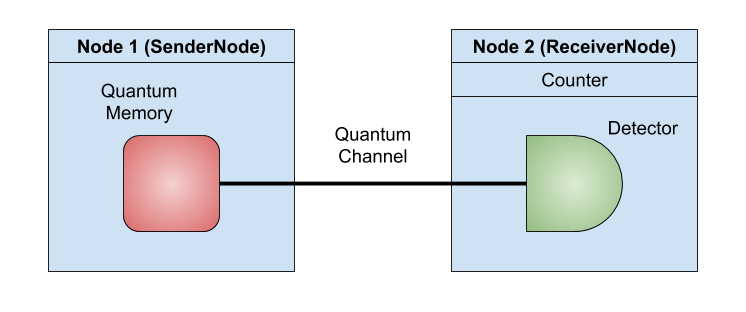
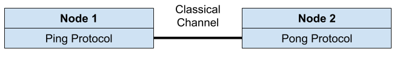

Chapter 2: Hardware Module¶
In this tutorial we will show some of the tools available in the hardware module of SeQUeNCe. The goal of this tutorial is to
Gain familiarity with the sequence
componentsmoduleGain familiarity with the sequence
topology.nodemoduleSee how networks may be built with sequence
To achieve this, we will construct a couple simple networks and show their functionality. We will also create a custom “protocol” to measure detection events as well as custom node types to hold all of our hardware.
Example: Optical Hardware¶
In this example, we will build a simple 2-node network. There will be a quantum memory on one node and a detector on the other node connected by a quantum channel. The topology is shown here:

Background¶
The hardware used in this tutorial is a single atom quantum memory and a single photon detector (SPD). The quantum memory exists in one of two spin states: spin up (|↑⟩) or down (|↓⟩). When an “excite” operation is applied to the memory, consisting of a short light pulse, a memory in the |↓⟩ state may emit a photon. A memory in the |↑⟩ state will emit no photon. As a quantum device, the memory may also exist in a superposition of states. One example is the |+⟩ = 1/√2(|↑⟩ + |↓⟩) state used in this example, where the memory has an equal probability of being in the up or down spin states with the same phase.
Step 1: Nodes and Hardware¶
To begin, we create our custom node classes. We will make two types - a SenderNode to hold the memory and send photons and a ReceiverNode to receive and detect photons. Both of our node types will inherit from Node, the basic node class from sequence, and we invoke the parent constructor for Node. In general, entities (such as nodes and hardware) require a string name and a Timeline in their constructor, as well as necessary parameters (for more details on timelines, see Tutorial 1).
Next, we create all of our hardware elements on each node. The detector is created easily, as no specific parameters are required (but we wish to set the efficiency to 1 to prevent errors). We’ll put the detector class on the receiver node.
The required parameters for memories are more numerous and are listed here:
fidelity: fidelity of entanglement. This is usually set to 0 when unentangled, but can be set to other values as it is usually replaced when entangled.frequency: the frequency at which the memory can be excited. A frequency of 0 means that the memory can be excited at infinite frequency.efficiency: the probability that the memory will emit a photon when it is supposed to. We set it to 1 here to prevent photon loss.coherence_time: the time for which a memory state (other than down) is viable, given in seconds.wavelength: the wavelength of emitted photons.
We will add our memory to the sender node class.
from sequence.kernel.timeline import Timeline
from sequence.topology.node import Node
from sequence.components.memory import Memory
from sequence.components.detector import Detector
from sequence.components.circuit import Circuit
_meas_circuit = Circuit(1)
_meas_circuit.measure(0)
class SenderNode(Node):
def __init__(self, name: str, timeline: Timeline):
super().__init__(name, timeline)
from sequence.components.memory import Memory
self.memory = Memory(‘node1.memory’, tl, fidelity=0, frequency=0,
efficiency=1, coherence_time=0, wavelength=500)
self.memory.owner = self
class ReceiverNode(Node):
def __init__(self, name: str, timeline: Timeline):
super().__init__(name, timeline)
self.detector = Detector(‘node2.detector’, tl, efficiency=1)
self.detector.owner = self
def receive_qubit(self, src: str, qubit) -> None:
qm = self.timeline.quantum_manager
key = qubit.qstate_key
meas_res = qm.run_circuit(_meas_circuit, [key], self.get_generator().random())[key]
if meas_res:
self.detector.get()
Notice that we also needed to change the receive_qubit method of the base Node class.
This method is invoked by the quantum channel when transmitting photons, and by default is set to do nothing.
For this method, the src input specifies the name of the node sending the qubit.
In our case, we don’t care about the source node, so we can ignore it.
The qubit input is the transmitted photon.
For single atom memories, the memory state heralded by the denotes the presence or absence of a photon.
This corresponds to the up or down state of the memory.
We will thus measure the memory state and record the photon accordingly (this will be done automatically in future updates).
If we measure 0, we must ignore the photon and not record it.
Otherwise, it is sent to the detector for recording.
The detector uses the get method to receive photons, and this interface is shared by many other optical hardware elements.
Step 2: Custom Protocol¶
Next, we will create our custom protocol using a custom class. Let’s denote this class as Counter, as we will be counting photons detection. The initializing method is very simple, only setting the count to 0. We then proceed to the trigger function, which will handle information from the detector. Normally, the detector will pass two arguments through this function (a reference to the specific detector and info including the detection time), but we are not concerned with these. We only wish to increment our counter.
class Counter():
def __init__(self):
self.count = 0
def trigger(self, detector, info):
self.count += 1
Step 3: Build the Network¶
We are now ready to start writing the main function of our script. The first step is to create the simulation timeline. We will use a 10 second run time, but more or less time may be needed depending on hardware parameters. Note that the runtime is given in picoseconds.
from sequence.kernel.timeline import Timeline
tl = Timeline(10e12)
tl.show_progress = False
We can then create our two network nodes using our custom node class. We only need to specify a name for each node and the timeline it belongs to:
node1 = SenderNode("node1", tl)
node2 = ReceiverNode("node2", tl)
node1.set_seed(0)
node2.set_seed(1)
Note that we also set the random generator seed for our nodes to ensure reproducability. Next, we create the quantum channel to provide connectivity between the nodes. We won’t need a classical channel, as we’re not sending any messages between nodes. In the initializer, we again specify the name and timeline, and include the additional required attenuation and distance parameters. We set attenuation to 0, so that we do not lose any photons in the channel (try changing it to see the effects!), and set the distance to one kilometer (note that the distance is given in meters). The set_ends method finally sets the sender and receiver for the channel, where the receiver is given as the name of the receiving node.
from sequence.components.optical_channel import QuantumChannel
qc = QuantumChannel("qc", tl, attenuation=0, distance=1e3)
qc.set_ends(node1, node2.name)
Lastly, we’ll create the counter for our detector. We only need to define an instance, and attach it to the detector. When the detector properly detects a photon, it will call the trigger method of all attached objects, including our counter.
counter = Counter()
node2.detector.attach(counter)
Step 4: Measure Memory Once¶
With the network built, we are ready to schedule simulation events and run our experiment. The details on scheduling events are covered in Tutorial 1, so we will not focus on them here. Let’s first run one experiment with the memory in the |↑⟩ state and observe the detection time of the single emitted photon. The memory state can be set with the update_state method:
node1.memory.update_state([complex(0), complex(1)])
We set the state of this single memory to a quantum state, given as a complex array of coefficients for the |↑⟩ and |↓⟩ states. Let’s also change our counter slightly to record the detection time. This can be done by accessing the 'time' field of the detector info:
class Counter():
def __init__(self):
self.count = 0
self.time = None
def trigger(self, detector, info):
self.count += 1
self.time = info['time']
We must also schedule an excite event for the memory, which will send a photon to a connected node supplied as an argument (in this case, we’ll use "node2"). Let’s put it at time 0:
from sequence.kernel.process import Process
from sequence.kernel.event import Event
process = Process(node1.memory, "excite", ['node2'])
event = Event(0, process)
tl.schedule(event)
We can then run our single experiment. The procedure to initialize and run the timeline is the same as Tutorial 1:
tl.init()
tl.run()
We should see that the count field of our Counter class is now 1, and that we have a detection time greater than 0 resulting from the quantum channel delay. Quantum channel delay is calculated based on the speed of light in an optical fiber and the length of the fiber (delay = L / c). We can view the detection and detection time as follows:
print("detection count: {}".format(counter.count))
print("detection time: {}".format(counter.time))
Step 5: Repeated Operation¶
Next, let’s repeatedly set the memeory to the |+⟩ state and record detection events. To give us a clean state, we’ll remove the code we wrote for step 4.
The events we wish to schedule are all for the memory. We want to first set it to a |+⟩ state with the update_state method, and then excite the memory to measure emitted photons with the excite method. The update_state method will require a plus state as input. The excite method needs an argument for the desired destination node, so we’ll supply the name of our node2. We’ll schedule both of these at a predetermined frequency FREQUENCY (given in Hz) for a set number of trials NUM_TRIALS.
import math
from sequence.kernel.process import Process
from sequence.kernel.event import Event
time_bin = int(1e12 / FREQUENCY)
process1 = Process(node1.memory, "update_state", [[complex(math.sqrt(1 / 2)), complex(math.sqrt(1 / 2))]])
process2 = Process(node1.memory, "excite", ["node2"])
for i in range(NUM_TRIALS):
event1 = Event(i * time_bin, process1)
event2 = Event(i * time_bin + (time_bin / 2), process2)
tl.schedule(event1)
tl.schedule(event2)
Step 6: Running and Output¶
The procedure to initialize and run the timeline is the same as Tutorial 1:
tl.init()
tl.run()
To access the results of our simulation, we just need the count parameter of our custom counter class. We’ll read it, and present the number of detections we had as a percent of the number of excite operations:
print("percent measured: {}%".format(100 * counter.count / NUM_TRIALS))
We expect the percent to be about 50%, as we initialized the memory in the |+⟩ state each time. Try messing with parameters to achieve different measurement results!
Example: Classical Messaging¶
In this example, we will build a simple 2-node network connected with a two-way classical channel. The topology is shown here:

We’ll send a PING message from node 1 at time 0, and when we recieve it at node 2, we’ll send back a PONG. For both cases we will print out the reception and the time at which we receive the message.
Step 1: Defining Message and Protocols¶
For this example, we won’t need to add any functions or hardware to the network nodes, so we will use the base Node class from SeQUeNCe. We will, however, need to define protocols for our nodes to control and send messages. They will achieve this through the send_message and receive_message methods of Node.
Our protocols will need a custom message type to work. In sequence, message types are given as native python enums. We construct the message type as follows:
from enum import Enum, auto
class MsgType(Enum):
PING = auto()
PONG = auto()
Now we can define the protocols. They will inherit from the Protocol class in SeQUeNCe. The PingProtocol on node 1 will send an initial PING message with the start method, and the PongProtocol will send a PONG message in response. Let’s view their implementations and go over the methods required:
from sequence.topology.node import Node
from sequence.protocol import Protocol
from sequence.message import Message
class PingProtocol(Protocol):
def __init__(self, own: Node, name: str, other_name: str, other_node: str):
super().__init__(own, name)
own.protocols.append(self)
self.other_name = other_name
self.other_node = other_node
def init(self):
pass
def start(self):
new_msg = Message(MsgType.PING, self.other_name)
self.own.send_message(self.other_node, new_msg)
def received_message(self, src: str, message: Message):
assert message.msg_type == MsgType.PONG
print("node {} received pong message at time {}".format(self.own.name, self.own.timeline.now()))
class PongProtocol(Protocol):
def __init__(self, own: Node, name: str, other_name: str, other_node: str):
super().__init__(own, name)
own.protocols.append(self)
self.other_name = other_name
self.other_node = other_node
def init(self):
pass
def received_message(self, src: str, message: Message):
assert message.msg_type == MsgType.PING
print("node {} received ping message at time {}".format(self.own.name, self.own.timeline.now()))
new_msg = Message(MsgType.PONG, self.other_name)
self.own.send_message(self.other_node, new_msg)
In both cases, the constructor requires
The node the instance is attached to
own,The name of the protocol instance
name,The name of the other (paired) protocol instance
other_name, andThe name of the other node hosting the paired protocol
other_node.
The name and node are required by the constructor of the base Protocol class, to attach the protocol to a node and provide a unique identifier. We will use the other name and other node to send messages. We must also add the protocol to the node’s protocol list here.
We also must add an init method. This is required of all protocols, and is called when the timeline init method is evoked, but we do not need to perform any actions here.
Next is the start method of the PingProtocol. We wish to send a message to the other protocol with this method. First, we create a message with the desired message type PING. This also specifies the destination protocol (other_name). Next, we invoke the send_message method of the node to which we are currently attached. This method requires the message to send as well as the name of the destination node (other_node).
We will next define the received_message method of both protocols. This method is called by the host node (from the constructor) when a message is received for the protocol instance. Its arguments include
src, the name of the source node, andmessage, theMessageobject delivered by the classical channel.
On both protocols, we wish to display when we receive a message. We can see the name of the node receiving the message as well as the time at which it was received (in picoseconds). For the PongProtocol, we additionally send a PONG message back to the starting node.
Step 2: Building the Network¶
We have now already completed the majority of the work required for our experiment! The only thing left is to create our nodes, protocols, and classical channel connection, and then run the experiment (which we will do in the next step). Classical channels in sequence are one-way only, so we will need to define two to achieve our two-way communication.
from sequence.kernel.timeline import Timeline
from sequence.components.optical_channel import ClassicalChannel
tl = Timeline(1e12)
node1 = Node("node1", tl)
node2 = Node("node2", tl)
cc0 = ClassicalChannel("cc0", tl, 1e3, 1e9)
cc1 = ClassicalChannel("cc1", tl, 1e3, 1e9)
cc0.set_ends(node1, node2.name)
cc1.set_ends(node2, node1.name)
pingp = PingProtocol(node1, "pingp", "pongp", "node2")
pongp = PongProtocol(node2, "pongp", "pingp", "node1")
The classical channel constructor takes a name and timeline followed by the distance (in meters) and delay of the channel (in picoseconds). Here we set the distance to 1 km and the delay to 1 ms. The set_ends method is identical to that for the quantum channel.
Step 3: Scheduling and Running.¶
We finally schedule the start of our ping-pong communication and run the experiment:
from sequence.kernel.process import Process
from sequence.kernel.event import Event
process = Process(pingp, "start", [])
event = Event(0, process)
tl.schedule(event)
tl.init()
tl.run()
In the output, we see that the PING message is received on node 2 first, followed by a PONG message received on node 1. The reception times of the messages are at 1 ms and 2 ms of simulation time, respectively, as determined by our classical channel delay.